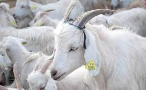

güneydoðu anadolu BÖLGESÝ HAYVANCILIK
Hayvancýlýk
Bölgede düzlükler geniþ yer kapladýðý ve bozkýrlar yayýlýþ gösterdiði için küçükbaþ hayvan beslenir. Küçükbaþ hayvanlar içinde en çok beslenen koyun ve kýl keçisidir. Güneydoðu Anadolu Bölgesi Tarým ve Hayvancýlýk konusunu aktardýk.
